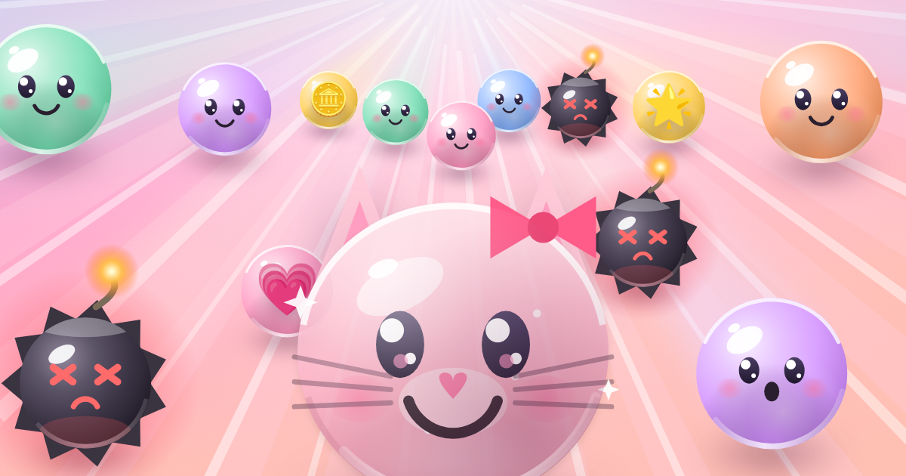
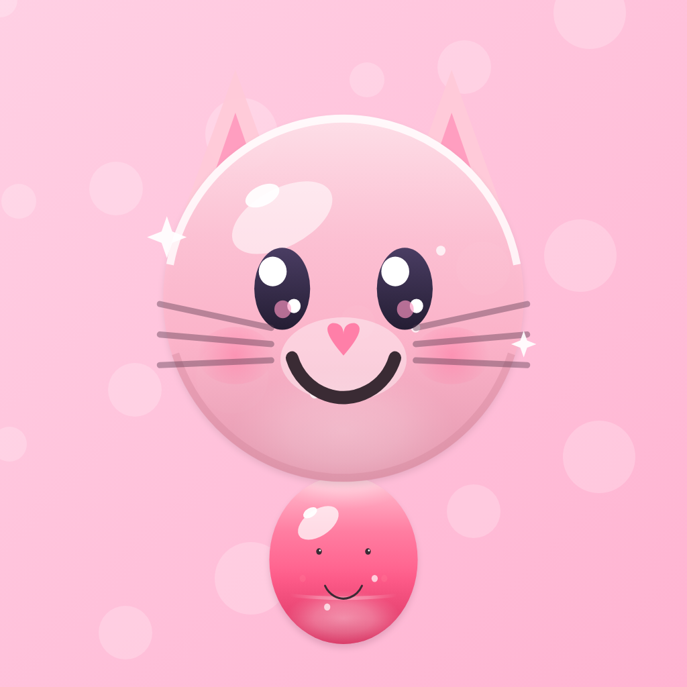
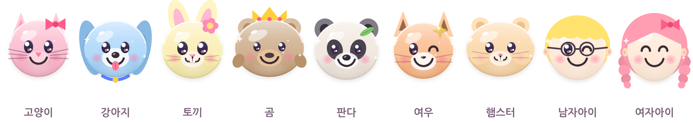
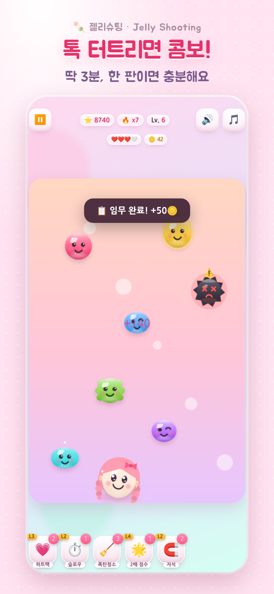
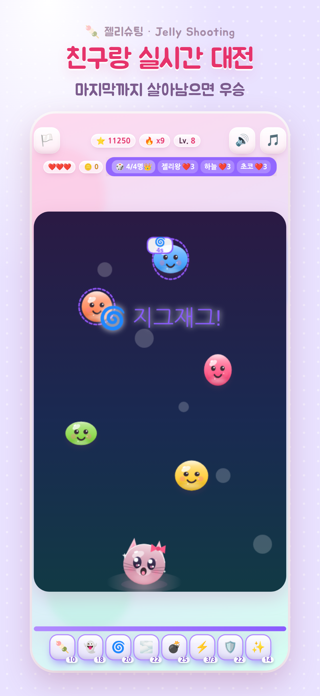
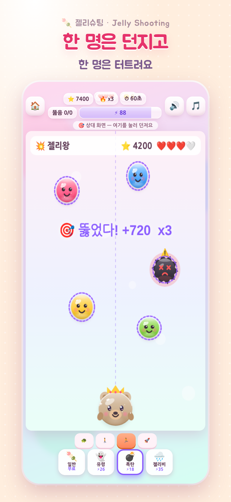
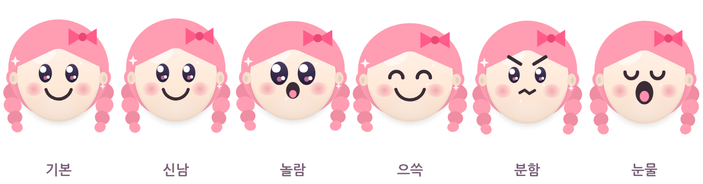
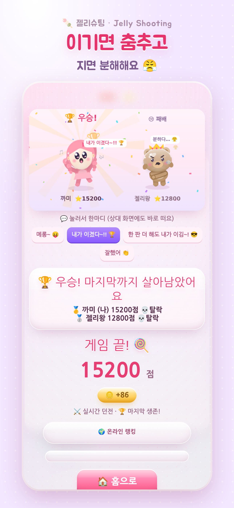

가족도, 연인도, 친구도 — 3분이면 한 판.
앱 설치도 회원가입도 없이, 열면 바로 시작이에요.
규칙은 30초면 배워요. 오늘 처음 하는 사람과도 바로 같이 할 수 있어요.
아이는 순한맛, 어른은 핵불닭. 같은 게임을 각자 속도로 해요. 광고도 결제도 없으니 아이 폰에 열어 줘도 마음이 편해요.
주말 거실에서 · 아이 옆에서 한 판
누가 이기나 딱 한 판. 이기면 트로피 들고 춤추고, 지면 팔짱 끼고 분해해요. 그 표정이 그림으로 남아서 두고두고 놀릴 수 있어요.
카페에서 · 저녁에 통화하면서
단톡방에 방 코드 네 자리만 보내면 최대 네 명이 함께. 앱 설치를 기다릴 일이 없으니, 하자는 말이 나오고 1분 안에 시작해요.
단톡방에서 · 점심시간에 · 퇴근하고

아홉 종에서 골라 머리·색깔·악세서리까지 내 마음대로
초대장을 보내거나 친구 추가를 할 필요가 없어요.
실시간 던전이나 던지기 게임에서 방을 만들어요.
네 자리 코드가 나와요. 단톡방에 그대로 붙여 넣으면 돼요.
친구가 코드를 넣으면 같은 판이 동시에 시작돼요.
앱 설치 · 회원가입 · 친구 추가 없음. 계정을 만들면 폰과 노트북에서 이어 할 수 있어요(선택).
따로 편집한 화면이 아니라, 실제로 플레이한 화면을 그대로 녹화했어요.
소리를 켜고 보세요 🔊 — 게임 안의 효과음과 배경음악이 그대로 담겨 있어요.
꾸미기 → 혼자 하기 → 실시간 던전 → 던지기 게임 → 승리 그림
떨어지는 젤리를 톡. 연달아 터지면 콤보가 붙고, 폭탄은 피해야 해요.

줄 서서 기다리는 3분, 자기 전 3분. 난이도 네 단계라 처음이면 순한맛, 손이 풀리면 핵불닭으로 올려요.
아이템 다섯 가지를 들고 들어가요 — 하트팩으로 목숨을 늘리고, 슬로우로 시간을 벌고, 폭탄청소 · 2배 점수 · 자석으로 위기를 넘겨요.

같은 젤리가 모두의 화면에 동시에 떨어져요. 옆에 있는 사람 점수가 실시간으로 올라가는 걸 보면서 하니까, 마지막 10초가 제일 시끄러워요.
게이지를 모아 방해를 던져요 — 지그재그로 젤리를 흔들고, 안개로 시야를 가리고, 스피드업으로 젤리를 빠르게 떨어뜨려요.

한 명은 던지고, 한 명은 막아요. 던지는 쪽은 상대 화면을 보면서 빈틈에 떨어뜨리고, 막는 쪽은 쏟아지는 걸 다 터뜨려야 해요. 실력이 서로 달라도 재미있는 쪽이에요.
다시 할 때 역할 바꾸기를 누르면 바로 자리가 바뀌어요. 무기는 일반 · 폭탄 · 유령 · 젤리비 네 가지.
점수만 남지 않아요. 그 판의 표정이 그림으로 남아요.

같은 캐릭터라도 판마다 표정이 달라져요
표정 · 자세 · 말풍선이 판마다 달라져요. 진 사람은 이긴 사람 화면을 관전하고, 그 장면을 그대로 공유해요.
캐릭터 아홉 종에 머리 · 색깔 · 악세서리. 코인을 모아 나만의 악세서리도 만들어요.
같이 할 사람이 없을 때도 실력 네 단계 AI와 바로 붙어요. 다시 할 때 실력과 역할을 바꿀 수 있어요.

이긴 사람은 트로피를 들거나 깡총 뛰거나 메롱하고, 진 사람은 팔짱을 끼거나 발을 구르거나 눈물을 흘려요. 말풍선은 메시지 보내듯 눌러서 바꿀 수 있어요 — 상대 화면에도 바로 떠요.
그림은 내가 꾸민 캐릭터 얼굴로 그려져요. 그대로 저장하거나 단톡방에 공유하면 그게 오늘의 전적이에요.
게임 엔진 없이 캔버스에 직접 그렸고, 실시간 대전은 Supabase Realtime을 써요.
index.html 안에 화면·소리·통신·저장이 다 들어 있어요. 게임 엔진도 빌드 도구도 쓰지 않아 반년 뒤에 열어도 그대로 돌아가요.
방·점수·방해·관전을 브로드캐스트로 주고받아요. 판 전체를 중계하지 않고 필요한 소식만 보내서, 느린 인터넷에서도 버텨요.
AI가 2분에 몇 점을 내는지 재서 네 단계를 잡았어요. 가장 쉬운 단계는 20,406점 → 6,576점. 사람이 이길 수 있는 연습 상대가 목표였어요.
화면 넘침·작은 버튼·2인·4인 통신·AI 난이도까지 자동으로 검사해요. 이 페이지의 사진과 영상도 스크립트가 진짜로 플레이해서 만든 거예요.
아이랑 같이 할 게임을 만들다가, 친구랑 붙을 수 있는 방까지 붙었어요. 점수보다 같이 웃는 장면을 남기고 싶어서 이기면 춤추고 지면 분해하는 그림을 넣었어요.
아니요, 주소만 열면 바로 돼요. 홈 화면에 추가하면 앱처럼 전체화면으로 열리고, 인터넷이 없을 때도 혼자 하기는 그대로 돌아가요.
글자를 조금 읽을 수 있으면 돼요. 폭력적인 표현이나 무서운 장면이 없고, 난이도 순한맛은 젤리가 천천히 떨어져요. 아이와 어른이 같은 방에서 각자 난이도로 할 수 있어요.
방을 만들면 네 자리 코드가 나와요. 친구가 그 코드를 넣으면 같은 방에서 시작해요. 2~4명까지 가능하고, 상대가 폰이든 노트북이든 상관없어요.
무료이고 광고가 없어요. 게임 안 코인은 플레이로만 모아요 — 현금 결제 항목이 아예 없어요.
거의 안 써요. 대전에서 주고받는 건 점수·방해 같은 짧은 소식뿐이라 한 통이 1KB 미만이에요.
아니요. 혼자 하기와 AI 대결은 계정 없이 돼요. 계정을 만들면 폰과 노트북에서 같은 캐릭터·코인으로 이어 할 수 있어요.